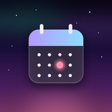

Thursday 12 November
To Do
To Do: loading today.
–
left today
To Do:
Sign in to see today
Calories
Calories: loading today.
–
kcal so far
–
kcal left
–
maintenance
Calories:
Sign in to see today

Planner
Planner: loading today.
–
events today
09
12
15
18
21
–
Planner:
Sign in to see today
To Do
Calories
Planner
Sign in
Uses the same account as the Planner. Home only reads today's numbers.
Email
Password
Cancel
Sign in
Account
Signed in as
Done
Sign out